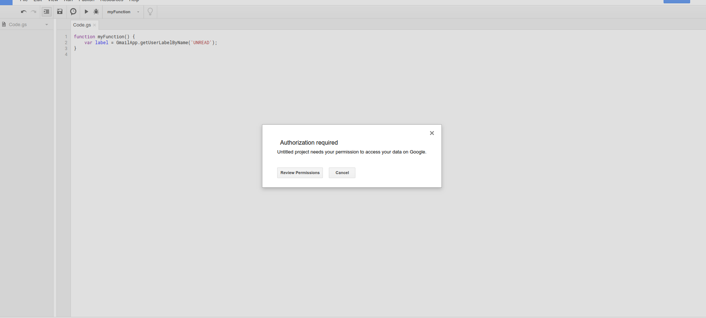
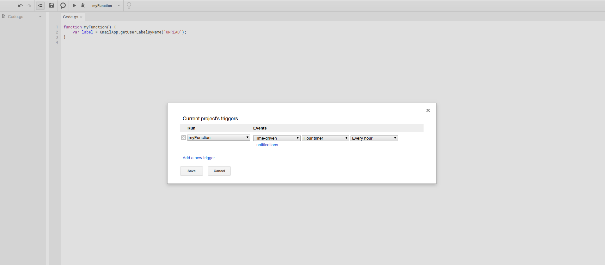

How to read and forward Trading view Alerts to sms using google scripts
Posted on September 28, 2018 in Trading • 4 min read
In the previous article, we proposed a method to create alerts on trading view, recieve these alerts by email, tag these alerts with a label and forward these alerts to our mobile phone by MMS. In this article we show a special case of a mobile operator (Free Mobile France) which offers the facility for us to forward email messages to our mobile phone as an sms message. We will make use of the google scripts and the powerful gmail API to access and read our email in real-time and forward the required messages. An excellent (tutorial) has been written on this subject though in french language. In this article, i will try to explain in detail how we can use the label we created previously to recieve trading view alerts by sms. We will be making use of google scripts to access our email in real time.
SMS notification by visiting a URL
The mobile operator (Free Mobile) allows us an option to receieve an sms notification to our mobile phone by visiting a personalized url created for each subscriber. The format for this personalized link is as shown below:
https://smsapi.free-mobile.fr/sendmsg?user=Username&pass=PassCode&msg=Hello%20World%20
The username and password are generated by the user in the Free mobile user account. Please follow this (tutorial) to get a more detailed description of how to create this passcode. If your mobile operator offers a service like this, it can be possible to recieve sms notifications in a similar manner by using the url provided by your mobile operator.
Script to read our email
Go to (google scripts) and click on New Script to create a new script. The script that reads our email is a single function written using google script library. The script is called periodically to check the email for new messages tagged with the label we created. Let us assume we created a label called "tradingview" as in our previous tutorial. The first line in our function tells gmail to get all messages with the label "tradingview" :
var label = GmailApp.getUserLabelByName('tradingview');
Now we put some error checking incase we recieve an empty response vector, we create a new label otherwise we continue to run the rest of the code within the else block.
if(label == null)
{
GmailApp.createLabel('tradingview');
}
else
{
//continue running here ...
}
Gmail organizes related messages in threads. For messages tagged with our label of interest, we are interested in the newest (or latest) unread message in this thread. So we get latest thread in the thread array using:
var threads = label.getThreads(0,1);
Now we loop through the threads to check for unread messages and for all the unread messages we store the message in a variable while skipping the read messages. The rest of the code in the for loop is explained subsequently.
for (var i = 0; i < threads.length; i++)
{
var thread = threads[i];
var messages = thread.getMessages();
var message= messages[thread.getMessageCount()-1];
if (!message.isUnread())
{
continue;
}
//code continues till the end of for loop ...
}
Now we can extract the important parts of the unread message that we like such as the sender, subject , date and the message body.
var from = message.getFrom();
var subject = message.getSubject();
var date = message.getDate(); // date/time
var htmlBody = message.getBody();
It is important to note here that the message we recieveved from trading view will be in a html format. The html tags and and attributes must be stripped off in order to obtain a short, concise and readable message that will be forwarded to us via sms. In order top do this we make use of a script contributed by a user on stack overflow :
var msg = getTextFromHtml(htmlBody);
Finally we create a url containing the unread gmail messages labelled "tradingview" using the html body as shown below:
url = 'https://smsapi.free-mobile.fr/sendmsg?user=35625729&pass=ZggZIzu5RoKzKx&msg=' + 'tradingView- ' + date + ' '+ msg
This url is encoded to avoid errors related using unsafe characters in a url and ensure that only ASCII character-set are used.
urlencoded = encodeURI(url)
We make use of the gmail api function UrlFetchApp to fetch the url. This services is used to fetch resources and to communicate with hosts on the internet according to it's documentation.
var response = UrlFetchApp.fetch(urlencoded, {muteHttpExceptions: true, escaping: false});
After reading an uread message and forwarding it to our mobile phone by sms, the last thing we want to do is to mark this email as read:
message.markRead()
The entire script is a function named Gmail_send_sms is as shown below:
function Gmail_send_sms(){
var label = GmailApp.getUserLabelByName('tradingview');
if(label == null){
GmailApp.createLabel('tradingview');
}
else{
var threads = label.getThreads(0,1);
var now = new Date().getTime();
for (var i = 0; i < threads.length; i++) {
var thread = threads[i];
var messages = thread.getMessages();
var message= messages[thread.getMessageCount()-1];
if (!message.isUnread()) {
continue;
}
var from = message.getFrom();
var subject = message.getSubject();
var date = message.getDate(); // date/time
var htmlBody = message.getBody();
var msg = getTextFromHtml(htmlBody);
url = 'https://smsapi.free-mobile.fr/sendmsg?user=35625729&pass=ZggZIzu5RoKzKx&msg=' + 'tradingView- ' + date + ' '+ msg
urlencoded = encodeURI(url)
Logger.log(urlencoded);
//var response = UrlFetchApp.fetch(url);
var response = UrlFetchApp.fetch(urlencoded, {muteHttpExceptions: true, escaping: false});
message.markRead()
}
}
}
The script that enables us to strip out the html tags and attributes is a function called getTextFromHtml
function getTextFromHtml(html) {
return getTextFromNode(Xml.parse(html, true).getElement());
}
function getTextFromNode(x) {
switch(x.toString()) {
case 'XmlText': return x.toXmlString();
case 'XmlElement': return x.getNodes().map(getTextFromNode).join('');
default: return '';
}
}
We will now save this script for the first time during which we are prompted by google authentication to review permissions for the script in order to grant access to the script to run in our gmail account.

We want our script to run periodically to check our email and forward the unread messages corresponding to a particular label by sms. So we set a trigger which calls the script periodically by going to Edit > Current project's triggers > Click here to add one now

Choose the name of the script under Run and under Event we select Time-driven. We can then shoose if we want the script to run daily, hourly or by the minute. Click Save to save all changes. Now our script is well set-up and running. New email messages from Trading view will be forwarded to our mobile phone as sms notifications.